Class 9 Assignment: Mapping Vulnerability
Fall 2025 | NINT5380 - CRN2189
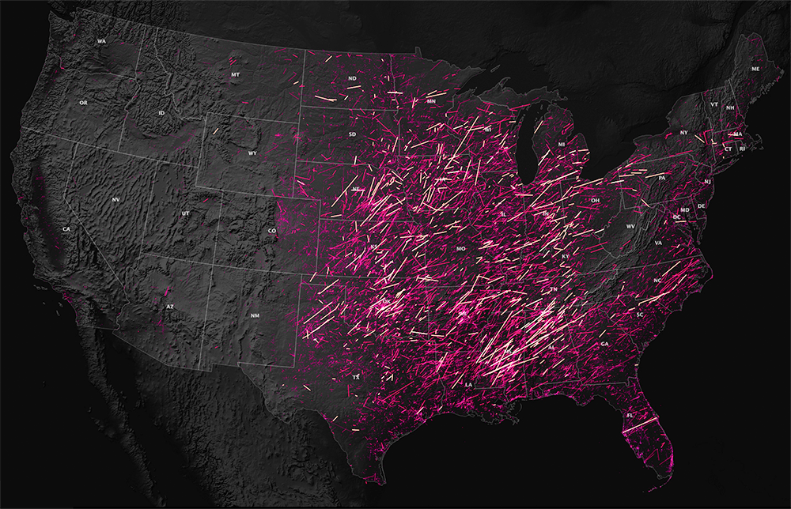
Preamble
As discussed in this week’s lecture, tornado hazard and vulnerabilities in both the social and physical environment in the United States can come together with tragic consequences. In this week’s assignment, both hazard and vulnerabilities will be accessed at the US County aggregation. A custom scoring mechanism will be utilized to thematically map four conditions:
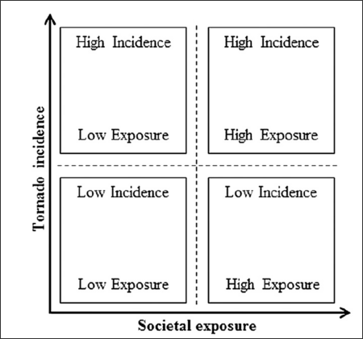
The assignment features several sections as follows:
- Mapping Vulnerability - Hazard x Vulnerability = Risk
- Vector Geoprocessing
- Attribute Summarization
- Custom Scoring Mechanism
- Thematic map design for Mapping Vulnerability
class 10 Recorded Lecture:

Before proceeding with assignment steps below, review the posted lecture slides + lecture recording for an overview of this week’s concepts and themes.
Class 10 Readings:
This week’s readings are NOT from the course textbook, and there will be no quiz for this week’s content. For context readings, refer to the Further References section at the bottom of the assignment.
Data:
Original Data Source:
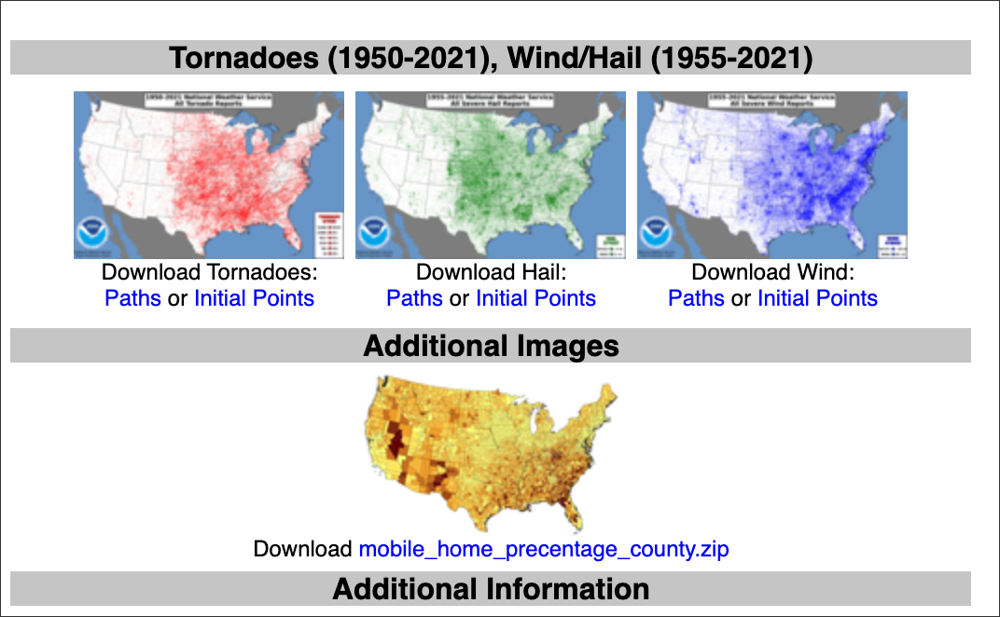
Location of Class 10 Assignment Direct Data Download
While the assignment steps below will feature Tornadoes (1950-2021), there is a slightly updated version available at NOAA - Tornadoes (1950-2023); and further Tornadoes (1950-2023). You are welcome to use any version of the data sources for the tornado strikes. If you do use the newer versions, keep in mind that you will have some counties with slightly more tornado strikes. In this case, your median value for tornado incidence may be slightly larger than that stated in the assignment (3.22 Median Tornado segments per 100 miles, per county). The NOAA updated version is located HERE.
To begin the assignment, download and access the assignment directory. Create a new assignment .qgis and connect Data Source Manager to the assignment directory to import assignment input vector features:
- Data download includes:
mobile_home_percentage_county.zip1950-2021-torn-aspath.zip(Tornado Paths, not points)
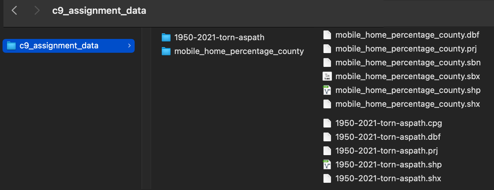
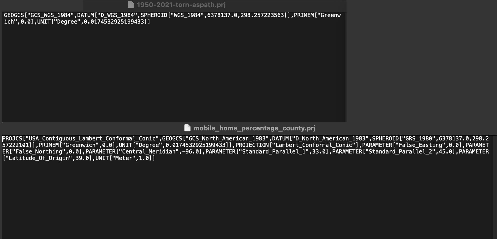
Note that the Tornado data .prj (top) is not the same as the .prj for the mobile home data(bottom). Utilize the projected mobile home data as the project and layer CRS. Thus, reproject the Tornado data from WGS84 to USA Contiguous Lambert Conformal Conic.
Assignment Step 1
For this project, the plugin GROUP STATS will be utilized. Download this plugin to the desktop GIS:
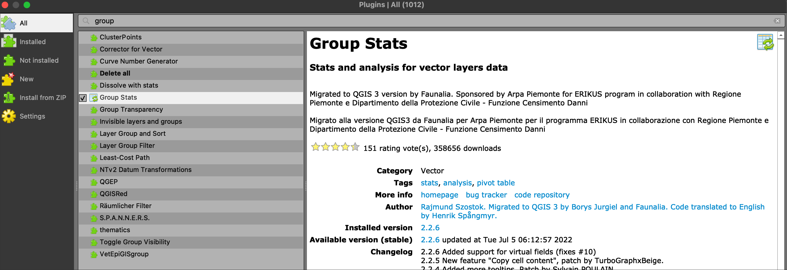
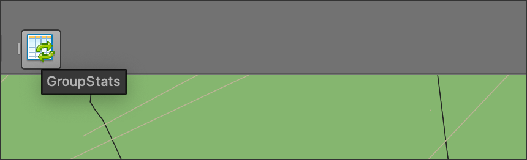
With the assignment data downloaded to your local drive, make a connection via Data Source Manager. Make sure to load the mobile home data first to set the project CRS. Then load the tornado data, and immediately reproject the tornado data to the project CRS USA Contiguous Lambert Conformal Conic with the EPSG code as EPSG:102004:
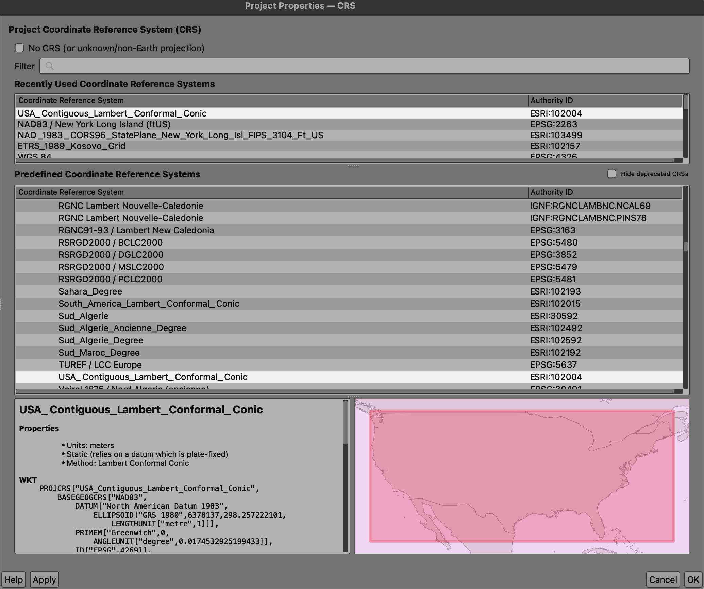
EPSG:102004- Next, load
1950-2018-torn-aspath.zip. Reproject and export the layer to the project directory:
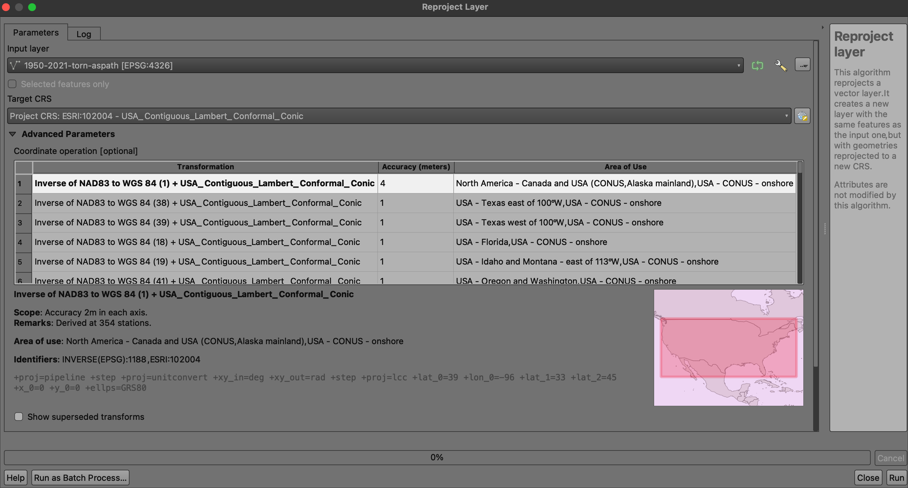
EPSG:102004Assignment Step 2 - Data preprocessing for the vector features
Like previous assignments, QGIS will require topology fixes in order for successful overlay analysis. Run Fix geometries on both layers. Export these layers to the project directory as tornado_paths.shp and mobile_home_counties.shp. These two layers will be the Hazard and Vulnerability inputs to the analysis.
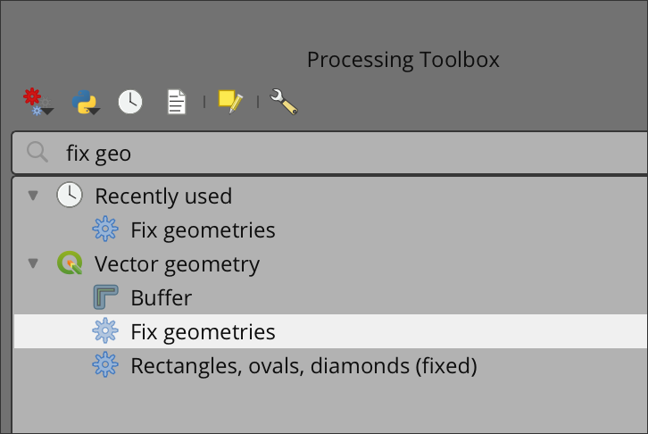
Assignment Step 3 - Overlay Geoprocessing
Currently many tornado paths in the historical dataset tornado_paths cross multiple counties. In order to derive a count of tornadoes per county, there are several overlay techniques that could be utilized. Here we will use Intersection; the result will be a polyline dataset that contains the attributes of the counties in the mobile_home_counties along with those of the original `tornado_paths.
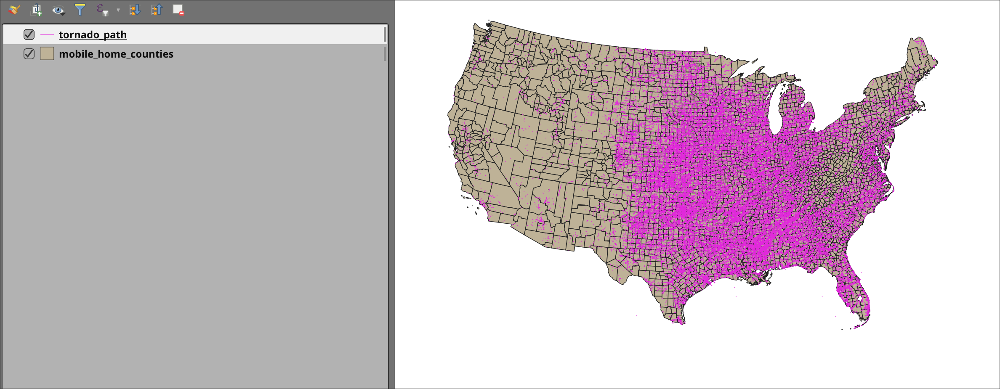
- Run Intersection as follows and output as
tornado_county.shp:
This geoprocessing step may take upwards 10 or 15 minutes.
- In review of the results, Abbeville, SC is the first county in the attribute table (sort on
COUNTYNAME). Note that the tornado segments are now cut at the county boundary as a result of the Intersection geoprocess:
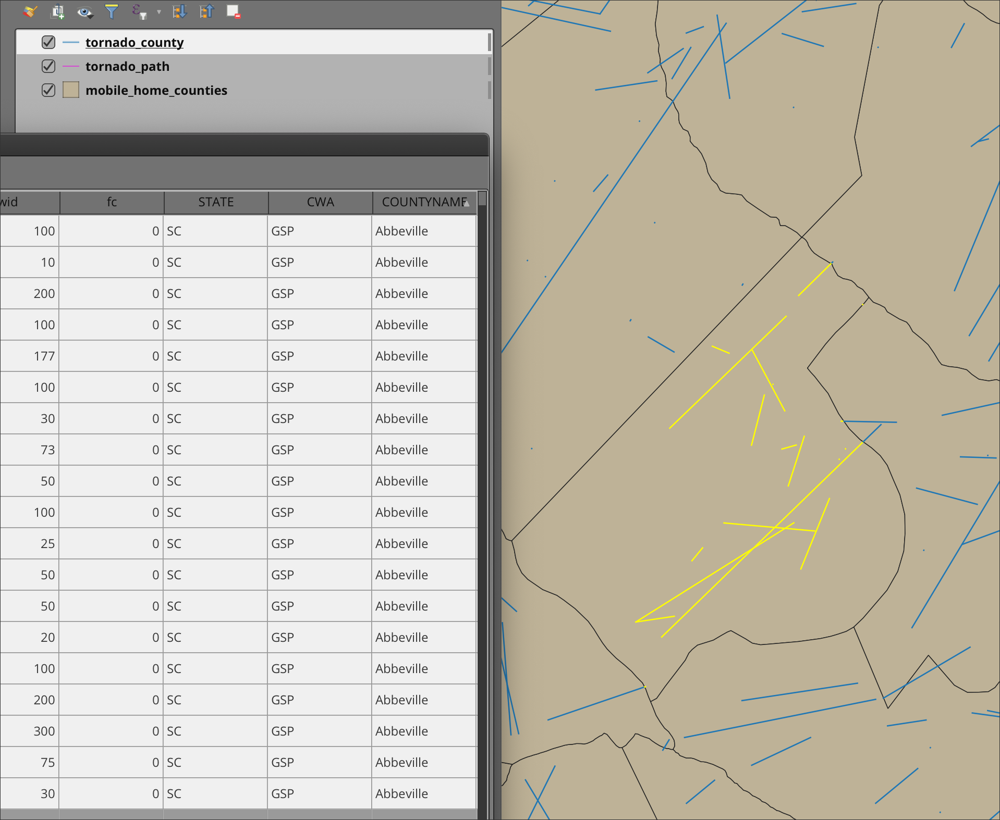
Assignment Step 4 - Table Development
With the Intersection complete, a summary table will be developed and joined to mobile_home_counties. The field FIPS will be utilized within the Group Stat plugin, gaining a summary count of each tornado segment per FIPS county code. This table will then be joined to mobile_home_counties via the FIPS column for further analysis in the attribute table.
Create a new column called Segment and simply provide a value of 1 within the new tornado_county.shp. In effect, this is simply a value per tornado segment that will then be summed per county.
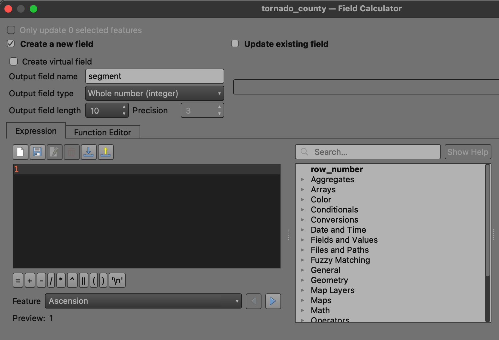
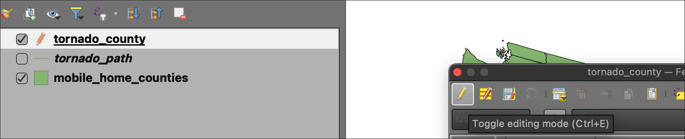
Remember to Toggle OFF the editing mode once the field segment is created and populated with the integer 1 value, and the process is complete.
Next, populate the Group Stat tool as follows, and note the resulting table with tornado counts sum per FIPS. In this step Rows are given the FIPS identifier column and the Value is set to the sum operation for the column titled segment which contains the value 1 for each county tornado segment (a total of 66,947 tornado segments).
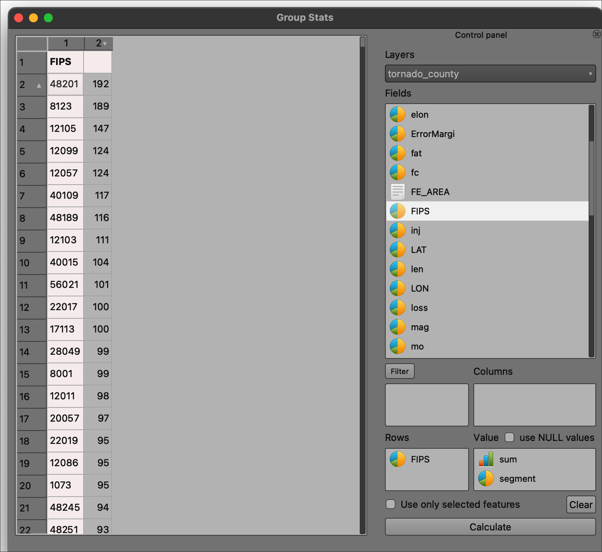
segment columnWith Group Stats still active, navigate to top menu and select to export all records as .csv, pointing to the assignment folder for export and naming the table fips_join:
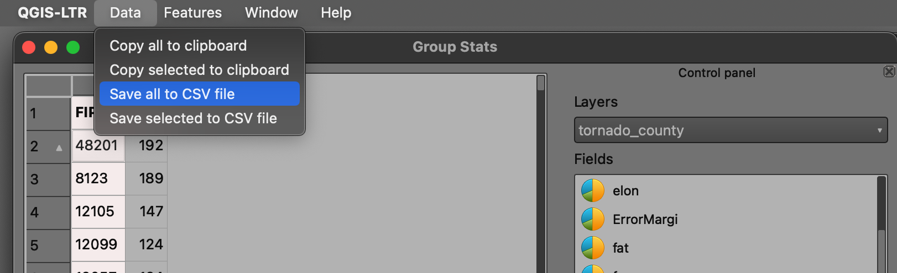
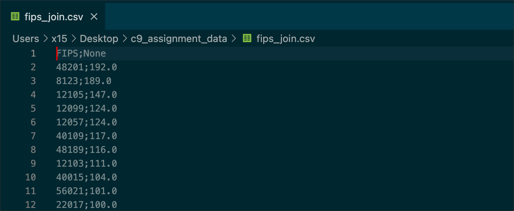
.csvThe Group Stats tool exports .csv with a semicolon separator.
Load fips_join.csv into the assignment project via Delimited Text within the Data Source Manager, and check the Semicolon separator checkbox within the Custom delimiter option. Note also that this table does not contain any geometry attributes so the Geometry Definitions will be set accordingly.
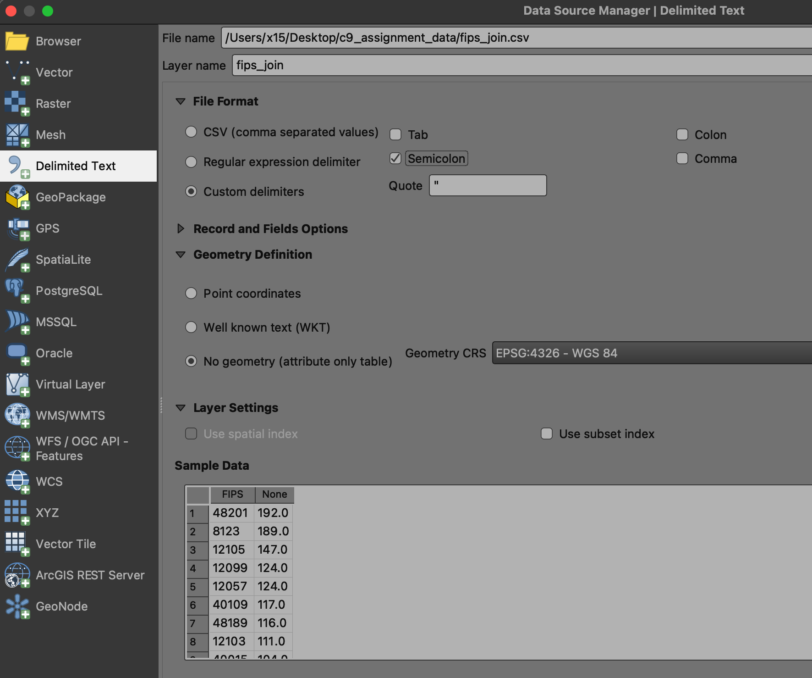
.csv import via Delimited TextNext, activate Join attributes by field value from the Processing Toolbox:

.csv import via Delimited Text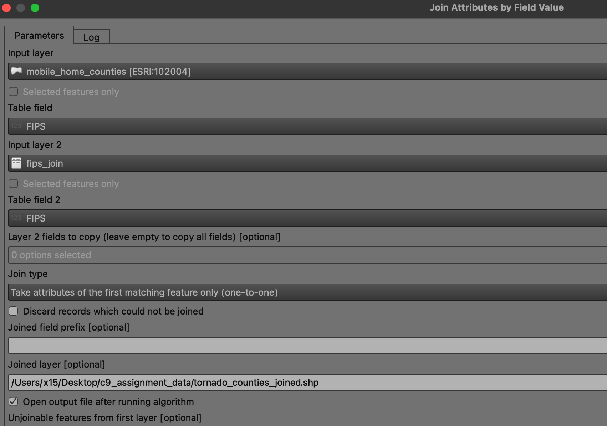
The resulting join will feature 209 records that do not join; these are the counties that did not have at least 1 tornado segment. Do note that if you use newer versions of the tornado strike data, you may have a few more counties that received a tornado segement over the previous tornado stike data version.
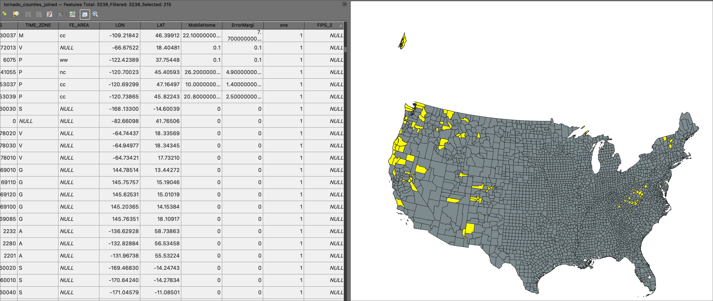
Video Guide I | Step I - IX:
Video Guide I above covers all steps just prior of the full table join. Utilize Video Guide II for coverage of the table join process in Assignment Step #4 above.
Assignment Step 5 - Normalization by Geography Attribute
As counties vary significantly in size, the absolute count of tornadoes per county is not yet comparable. To do so, a constant of 100 sq. miles calculated per county, followed by the normalization of counts by geography.
First, Add geometry attributes (area in square meters) within tornado_counties_joined.shp. This will produce a new temporary layer Added geom info with a new area column:
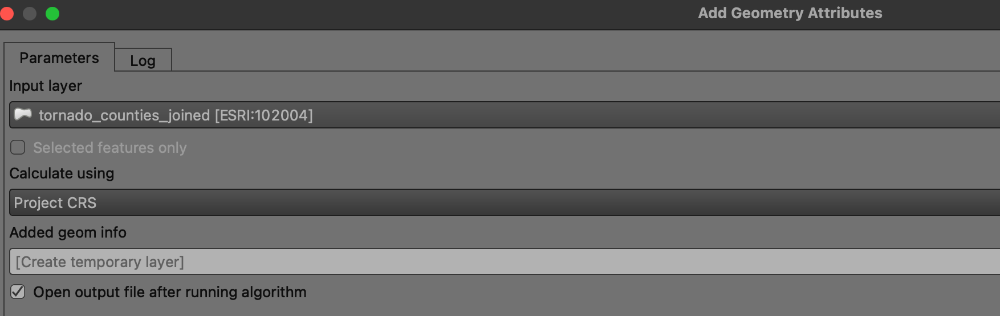
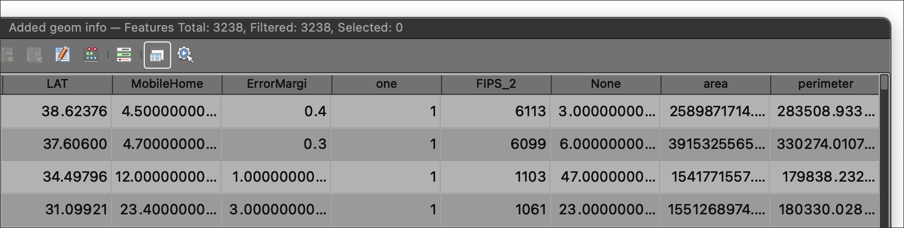
Next, calculate a square miles column with the Field Calculator using the following equation in a new field sq_miles, type decimal. Divide by 100 to normalize size for a final count of tornadoes per 100 sq miles within each county:
(area * 0.00000038610)/100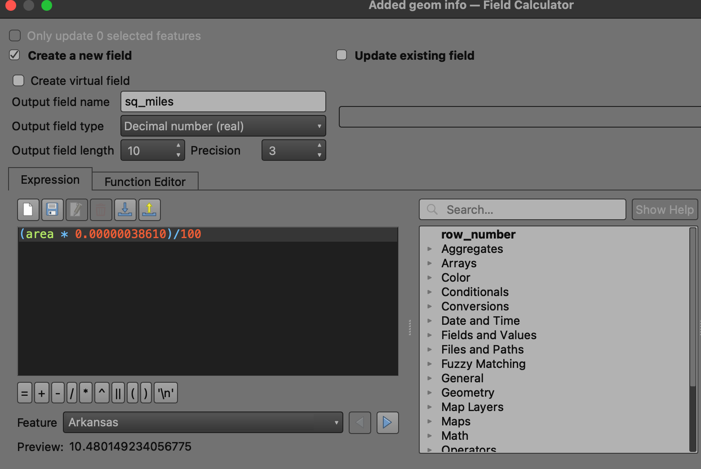
Finally, normalize the tornado count per 100 county miles within a new field count_100, type whole number:
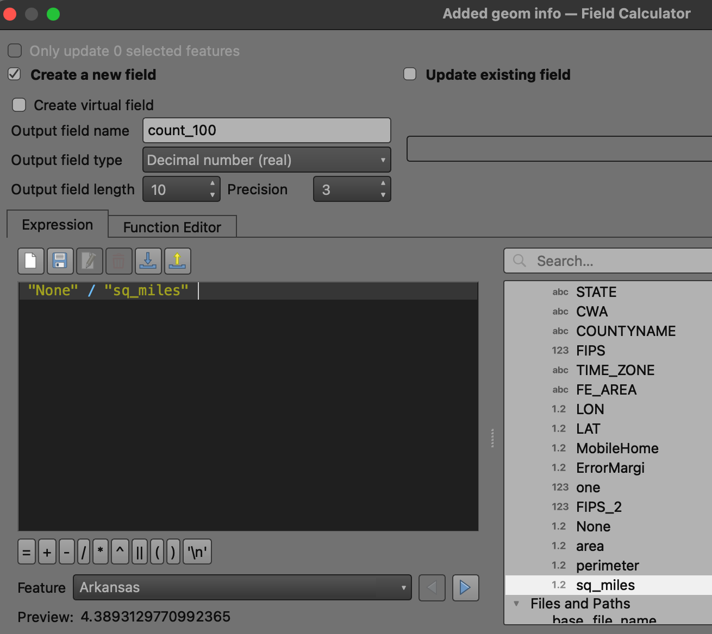
Note that the resulting column for the segment count is now titled None within Add geom info temporary layer.
Assignment Step 6 - Rank Assignments
In this next step, 4 total rank assignments will be given to a new column risk_rank based on a series of selections.
Use the median societal exposure and tornado incidence scores as the break between high and low exposure and incidence - source.
- 4 Rank Conditions:
11.22% = Median Mobile Home percentage per County
3.22 Median Tornado segments per 100 miles, per county (when producing this statistic, NULL values are assumed to be value 0.)
Condition #1 -
Low Incidence, Low Exposure
LI = <3.22
LE = <11.22
Condition #2 -
Low Incidence, High Exposure
LI = <3.22
HE = >=11.22
Condition #3 -
High Incidence, Low Exposure
HI = >=3.22
LE = <11.22
Condition #4 -
High Incidence, High Exposure
HI = >=3.22
HE = >=11.22
Utilize fields count_100 and MobileHome for Incidence and Exposure, respectively.
To Start, make each selection condition #1 through #4 within count_100 and MobileHome. Create a new column risk_rank, type whole number and make assignment 1, 2 , 3 and 4 in this new column based on each selection, respectively.
Populate with value -999 to start. Any records after assignments #1 through #4 with -999 resulting are simply the NULL values - counties that have no tornadoes. Those can either be symbolized in the final map as ‘No Incidence Records’:
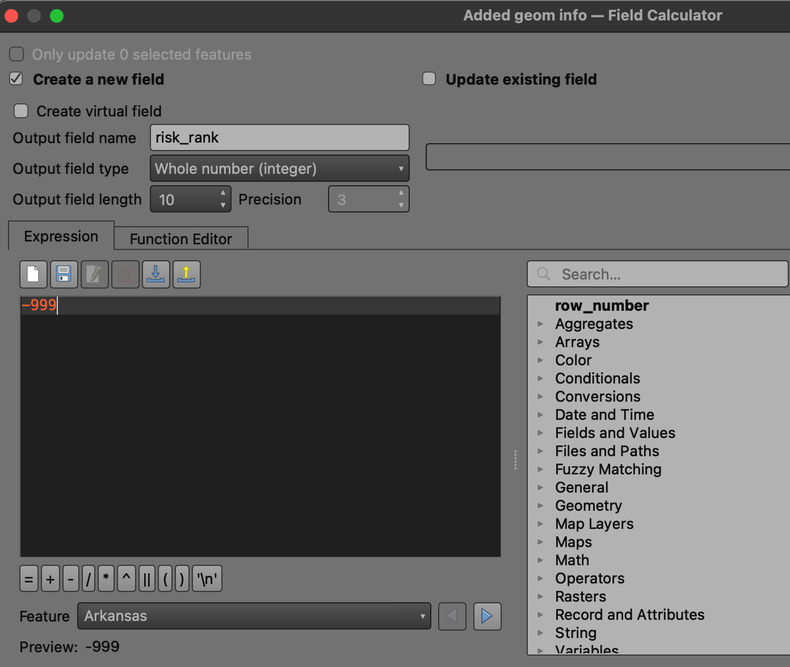
risk.rankSelection and Assignments for Conditions:
Make sure to clear selections after each condition is assigned in risk.rank:
Condition #1 -
- Select by Expression:
"MobileHome" <11.22 and "count_100" <3.22 - Field Calculator within
risk.rank= 1
- Select by Expression:
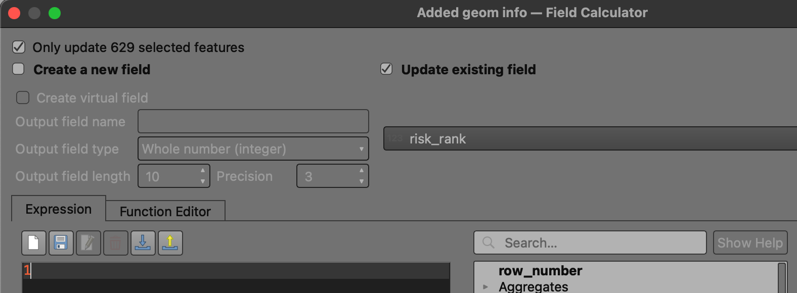
Condition #2 -
- Select by Expression:
"MobileHome" >=11.22 and "count_100" <3.22 - Field Calculator within
risk.rank= 2
- Select by Expression:
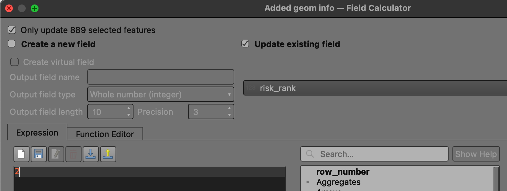
Condition #3 -
- Select by Expression:
"MobileHome" <11.22 and "count_100" >=3.22 - Field Calculator within
risk.rank= 3
- Select by Expression:
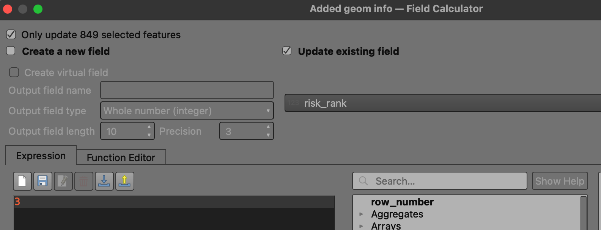
Condition #4 -
- Select by Expression:
"MobileHome" >=11.22 and "count_100" >=3.22 - Field Calculator within
risk.rank= 4
- Select by Expression:
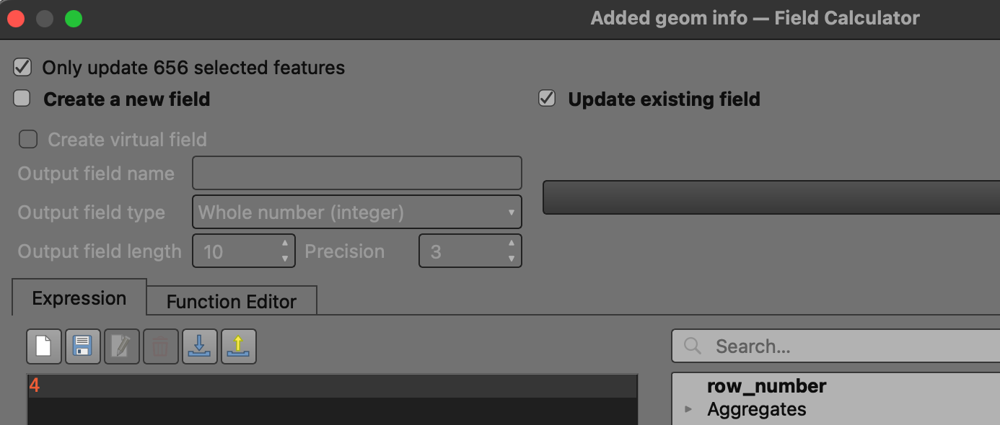
Video Guide II | Step IX - XII:
Assignment Step 7 - Thematic Design
If you have not done so, export Add geom info layer with the rank calculations complete as county_tornado_ranks.shp. Once complete, thematic assignments will be given as follows:

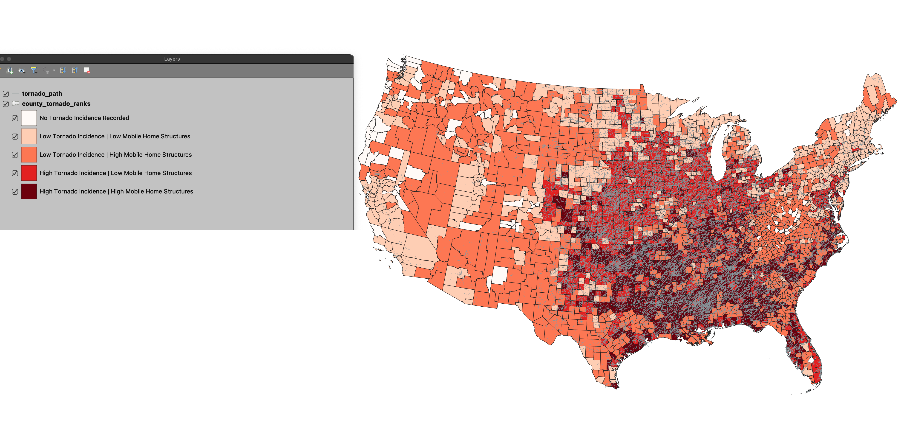
As seen in the resulting map, condition 4 exhibits a spatial pattern of concentration centered on the southeastern US counties due to the frequency of tornadoes (Hazard) intersecting human geography by building type (Vulnerability + Exposure).
Map layout & Deliverable:
To development the final map design, utilize the map example PDF below to help guide your process.
Final map layout will include the following elements on either a 11x17” or 8.5x11” Portrait 300 DPI:
- Main map frame featuring your cartographic output with thematic design
- A map title
- Legend representing each thematic rank category
- Data source & Author tag
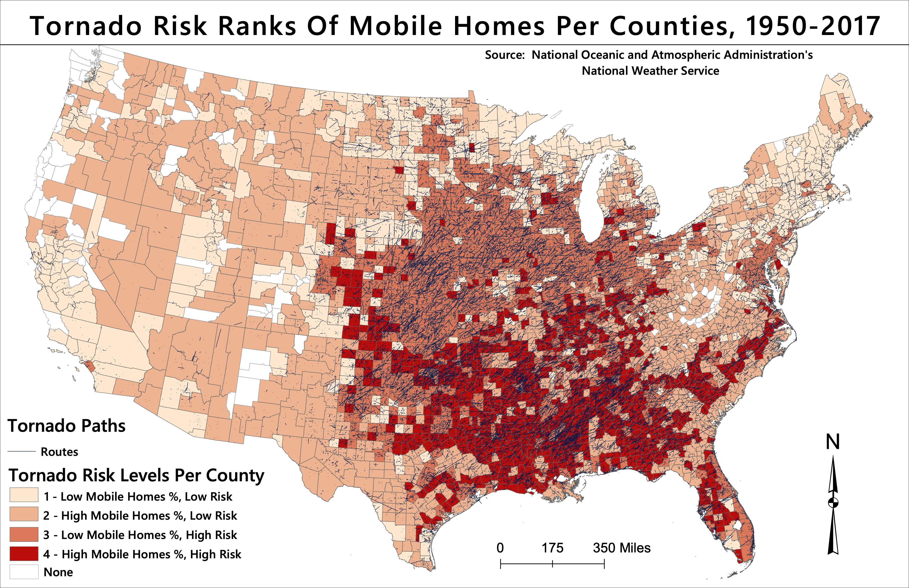
Example Layouts - Assignment 9 Utilize the following map example to guide your design process:
Resources:
- Tornadoes and Global Warming: Is There a Connection?
- Social Vulnerability
- SVI Tools
- SVI methods & metadata
- Hurricane Harvey Vulnerability Mapping
- Double danger in the double wide: Dimensions of poverty, housing quality and tornado impacts
- Tornado Vulnerability in Texas - Methods
- Turning the Corner (TTC) - Vulnerability Housing Index for Detroit, MN
- NYC Displacement Alert Map (DAP Map)
- Climate Change Mapping
- NY Times - disasters over time
- Lead Exposure Risk Map
- ‘useful’ disaster and climate change maps
- Distressed Communities Index (DCI)
- Vulnerability to Environmental Hazards - Susan Cutter
- Finescale Assessment of Mobile Home Tornado Vulnerability in the Central and Southeast United States - Stradler + Ashley
- INTRODUCTION TO DISASTER RISK REDUCTION
- RECIPE FOR DISASTER -How the Dynamic Ingredients of Risk and Exposure Are Changing the Tornado Disaster Landscape
- CNN Alabama Tornadoes 3/6/2019
- Understanding Risk
- CNBC Climate Change and Insurance
- World water stress
- NPR income & urban heat
- Economic Losses,Poverty & Disasters 1998-2017
- Climate Change: Where Should I Move?
- Washington Post: Home Insurance + Climate Change
- NYT: Hurricanes